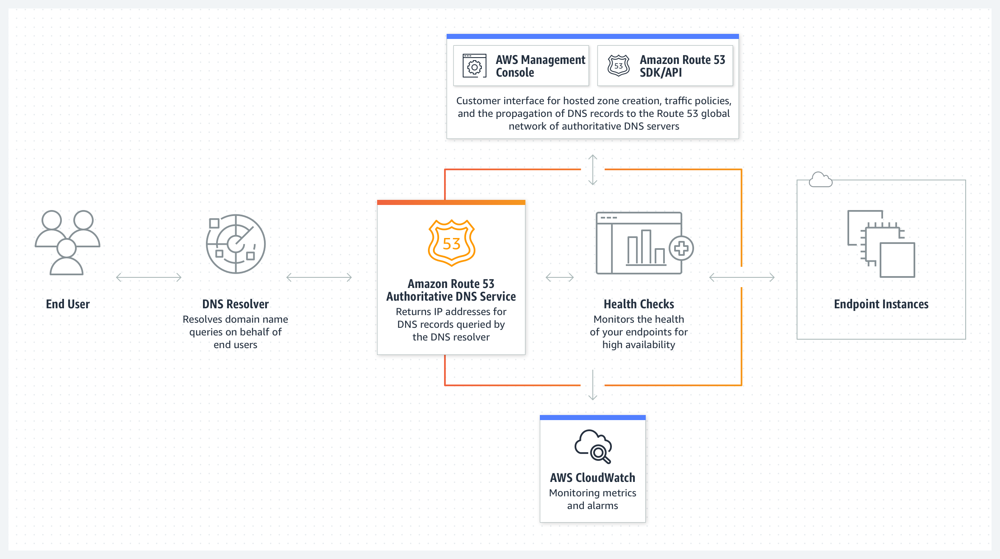
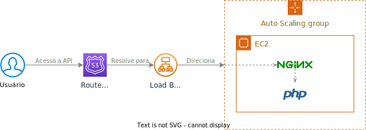

Criando Aplicações na Nuvem
Vinícius Campitelli
Sobre
Sobre
Sobre o palestrante

Campitelli
- Bacharel em Ciência da Computação pela UFSCar
- Desenvolvedor há mais de 15 anos
- Membro do PHPSP
- Entusiasta em cibersegurança
- Consultor de TI e instrutor de treinamentos
GitHub
vcampitelliThreads
vcampitelliX Twitter
vcampitelliAplicação
Aplicação
Arquitetura do exemplo

Computação em Nuvem
Computação em Nuvem
Conceito segundo o NIST*
... é um modelo para possibilitar acesso ubíquo, conveniente e sob demanda via rede a um conjunto de recursos computacionais configuráveis (como servidores, aplicações e armazenamento) que podem ser rapidamente provisionados e disponibilizados com o mínimo de esforço de gerenciamento ou interação com o provedorProposta SP 800-145
* Instituto Nacional de Padrões e Tecnologia dos Estados Unidos
Computação em Nuvem
Conceito segundo o NIST
Características essenciais:
Self-service sob demanda
Cliente deve provisionar serviços unilateralmente sem interação humana com o provedor
Acesso generalizado à rede
Serviços devem ser disponibilizados e acessados via mecanismos padrões de rede
Agrupamento de recursos
Devem servir múltiplos clientes, sendo atribuídos e reatribuídos de forma dinâmica
Elasticidade rápida
Recursos devem ser escaláveis para suportar a demanda
Serviço mensurável
Deve ser possível medir e monitorar o uso de cada serviço
Computação em Nuvem
Vantagens e desvantagens
Vantagens
- Permite ao cliente focar no problema
- Velocidade de implementação
- Elasticidade de recursos
- Processamento distribuído
- Economia de custos (de modo geral)
Desvantagens
- Maior complexidade de início
- Vendor lock-in
- Ameaças de segurança (se não bem configurada)
- Gastos imprevisíveis (se não bem configurados)
Cloud Computing
Principais provedores

Veja mais provedores no artigo do Gartner:
"Quadrante Mágico para infraestrutura em nuvem e serviços de plataforma"
Amazon Web Services
Amazon Web Services
Visão geral
O principal provedor de cloud segundo o Gartner nos últimos 10 anos, com mais de 200 serviços disponíveis
aws.amazon.comAmazon Web Services
Alguns serviços
- API: API Gateway
- Armazenamento: S3, EFS
- Bancos de Dados: RDS, DocumentDB, MemoryDB
- CDN: CloudFront
- Configurações: Systems Manager
- Containerização: ECS, EKS
- DNS: Route 53
- Desenvolvimento: CodeBuild, CodeCommit, CodeDeploy, CodePipeline
- Mensageria: EventBridge, SQS
- Monitoramento: CloudWatch
- Mídia: MediaConvert, MediaLive
- Processamento: EC2
- Provisionamento: CloudFormation
- Segurança: IAM, KMS
- Serverless: Lambda
Amazon Web Services
Infraestrutura global
Regiões (Regions)
Local físico onde um grupo de datacenters está localizado
Exemplos: São Paulo (sa-east-1), Virgínia do Norte (us-east-1) e Califórnia (us-west-1)
Amazon Web Services
Infraestrutura global
Zonas de disponibilidade (Availability zones)
Cada grupo de datacenters em uma região com alta conectividade entre si, úteis para prover alta disponibilidade dentro de uma região
Exemplos: sa-east-1a, sa-east-1b, sa-east-1c
Amazon Web Services
Infraestrutura global
Zonas locais (Local zones)
Locais alternativos mais próximos a grandes cidades para diminuir a latência
Exemplos: Rio de Janeiro, Buenos Aires, Santiago
Amazon Web Services
Infraestrutura global
28 regiões
90 zonas de disponibilidade
245 países e territórios atendidos
Serviços
AWS IAM
Serviços » IAM
Definição
O AWS Identity and Access Management é um serviço responsável pela gestão de identidades e acesso aos serviços de contas da AWS
docs.aws.amazon.comServiços » IAM
Entidades
Usuário
Entidade que representa uma pessoa ou aplicação que irá interagir com a AWS, que possui suas próprias credenciais (access keys) e deve receber as permissões necessárias para liberar acesso aos recursos da AWS
Access Key
Par de chaves (access key ID e secret access key) que garante acesso a um usuário
Serviços » IAM
Entidades
Função (role)
Identidade que também pode receber permissões e que permite que usuários a incorpore para receber o acesso desejado
Política (policy)
Conjunto de permissões permitindo ou negando o acesso à elas, que podem ser aplicadas a usuários, grupos de usuários ou funções
Serviços para nosso frontend
S3
Serviços para nosso frontend » S3
Definição
O Amazon Simple Storage Service é um serviço de armazenamento de objetos que oferece escalabilidade, disponibilidade de dados, segurança e desempenho líderes do setor
Clientes de todos os tamanhos e setores podem armazenar e proteger qualquer quantidade de dados para praticamente qualquer caso de uso, como data lakes, aplicativos nativos da nuvem e aplicativos móveis
Com classes de armazenamento econômicas e recursos de gerenciamento fáceis de usar, você pode otimizar custos, organizar dados e configurar controles de acesso ajustados para atender a requisitos específicos de negócios, organizacionais e de conformidade
aws.amazon.com/s3Serviços para nosso frontend » S3
Exemplo de uso

Serviços para nosso frontend » S3
Buckets
Acessando os Buckets
Acessamos o S3 para gerenciar e armazenar arquivos na nuvem de forma segura e escalável

Criando e Configurando um Bucket
Criamos um bucket para armazenar arquivos. Ele funcionará como um diretório na nuvem

Definindo Propriedades do Bucket
Definimos um nome único e propriedades para personalizar como o bucket funcionará, incluindo permissões e locais de armazenamento

Verificando Propriedades do Bucket
Agora é possível verificar as propriedades do bucket recém-criado para garantir que está configurado corretamente

Serviços para nosso frontend
CloudFront
Serviços para nosso frontend » CloudFront
Definição
Serviço de Rede de Entrega de Conteúdo (do inglês Content Delivery Network, resultando na sigla CDN), responsável pelo caching e distribuição de conteúdo a partir de uma das localizações de borda mais próximas de seus clientes
aws.amazon.com/cloudfrontServiços para nosso frontend » CloudFront
Exemplo de uso
 aws.amazon.com/cloudfront
aws.amazon.com/cloudfront
Serviços para nosso frontend » CloudFront
Rede global de borda (edge network)
 aws.amazon.com/cloudfront
aws.amazon.com/cloudfront
Serviços para nosso frontend » CloudFront
Conceitos
Origem
Servidor que está rodando e servindo a aplicação
Distribuição
Cadastro criado para cada origem, com suas configurações e políticas de caching
Invalidação
Ação de marcar um objeto (ou grupo de objetos) como obsoletos, fazendo com que o CloudFront busque novamente da origem
aws.amazon.com/cloudfrontServiços para nosso frontend » CloudFront
Distribuição
Acessando as Distribuições
Criamos uma distribuição no CloudFront para entregar conteúdo de forma rápida e segura globalmente
Definindo Propriedades da Distribuição
Definimos o domínio de origem e as políticas de cache para garantir que o conteúdo sempre seja carregado da forma mais eficiente possível
Configurando o Certificado SSL
Selecionamos um certificado SSL para garantir a segurança e que todo o tráfego seja servido via HTTPS
Definindo o Root Padrão e Criando a Distribuição
Configuramos o arquivo principal (index.html) para que o CloudFront saiba qual conteúdo servir inicialmente
Checando as Informações da Distribuição
Após a distribuição ser criada, verificamos a URL gerada e o status de propagação para testar o acesso global do conteúdo
Serviços para nosso frontend
Route 53
Serviços para nosso frontend » Route 53
Definição
Serviço de DNS altamente integrado com funcionalidades da AWS (como EC2, S3, ELB), onde o usuário é cobrado pelas zonas hospedadas e número de consultas realizadas, não sendo disponibilizado no Free Tier
aws.amazon.com/route53Serviços para nosso frontend » Route 53
DNS
O Domain Name System é um serviço que tem como principal funcionalidade a conversão de domínios legíveis por seres humanos (por exemplo google.com) em endereços IP (por exemplo 142.251.132.238)
aws.amazon.com/route53 cloudflare.com/learning/dnsServiços para nosso frontend » Route 53
Exemplo de uso
aws.amazon.com/route53
Serviços para nosso frontend » Route 53
...
Acessando Route 53
Configuramos o Route 53 para gerenciar o DNS do nosso domínio, assegurando que o tráfego seja direcionado corretamente
Selecionando a Zona Hospedada
Selecionamos a zona hospedada correspondente ao domínio que estamos gerenciando para controlar seus registros DNS
Visualizando Registros
Aqui visualizamos e gerenciamos os registros DNS, como apontar o domínio para um servidor específico ou configurar subdomínios
Serviços para nosso backend
EC2
Serviços para nosso backend » EC2
Definição
O Amazon Elastic Compute Cloud é uma plataforma de computação mais ampla e profunda, com mais de 500 tipos de instâncias e opções de processador, armazenamento, rede e sistema operacional para ajudá-lo a atender melhor às necessidades de sua carga de trabalho
aws.amazon.com/ec2Serviços para nosso backend » EC2
Instância
Acessando a Execução de Instâncias
Estamos iniciando uma nova instância EC2 para hospedar nossa aplicação, criando a infraestrutura de backend na nuvem
Definindo um Nome para a Instância
Aqui, definimos um nome claro para identificar facilmente nossa instância dentro do console da AWS
Selecionando a Imagem e o Tipo da Instância
Estamos escolhendo o sistema operacional (via Amazon Machine Image) e a capacidade de hardware adequada para nossa aplicação
Definindo o Par de Chaves
Para garantir o acesso seguro via SSH, configuramos um par de chaves que permitirá a conexão à máquina
Configurando a Rede
Aqui configuramos a rede da instância, assegurando que os serviços necessários (como HTTP/HTTPS) estejam acessíveis
Criando a Instância
Finalizando as configurações, iniciamos a criação da instância. Em poucos minutos, nossa máquina estará pronta para uso
Acessando a Instância via SSH
Após a instância ser criada, acessamos via SSH utilizando o par de chaves definido, conectando diretamente no servidor
Serviços para nosso backend
RDS
Serviços para nosso backend » RDS
Definição
O Amazon Relational Database Services é uma coleção de serviços gerenciados que simplifica a configuração, operação e dimensionamento de bancos de dados na nuvem
aws.amazon.com/rdsServiços para nosso backend » RDS
Prática
Acessando o Amazon RDS
Estamos configurando um banco de dados gerenciado na nuvem, acessando o painel do RDS para iniciar o processo
Definindo o Mecanismo de Banco de Dados
Selecionamos o mecanismo de banco de dados que melhor se ajusta às necessidades da nossa aplicação, como MySQL ou PostgreSQL
Definindo um Identificador e uma Senha
Aqui, definimos um nome exclusivo e uma senha segura para gerenciar o banco de dados com acesso restrito
Configurando o Tamanho do Armazenamento e a Escalabilidade
Definimos o armazenamento inicial e habilitamos a escalabilidade automática para garantir que o banco de dados possa crescer conforme a demanda aumenta
Definindo a Conectividade
Aqui configuramos a rede para garantir que o banco de dados seja acessível apenas por fontes autorizadas, utilizando VPCs e grupos de segurança
Criando o Banco de Dados
Concluímos as configurações e iniciamos a criação do banco de dados, o que pode levar alguns minutos
Acessando as Propriedades
Após a criação, acessamos o endpoint do banco de dados, essencial para conectar a aplicação ao RDS de forma segura
Serviços para nosso backend
Elastic Load Balancing
Serviços para nosso backend » Elastic Load Balancing
Definição
O balanceador de carga é uma ferramenta para fazer a distribuição do tráfego de rede entre destinos diferentes para permitir a escalabilidade da aplicação
Cada vez que uma máquina é criada, ela deve avisar o Load Balancer para que ele atualize seu cadastro interno para poder começar a rotear as requisições para o novo serviço
Health check
Periodicamente, o Load Balancer faz checagens nos servidores cadastrados para verificar se eles estão respondendo, removendo-os se não responderem
Serviços para nosso backend » Elastic Load Balancing
Arquitetura sem Load Balancer
Arquitetura com Load Balancer
Serviços para nosso backend » Elastic Load Balancing
Conceitos
Listeners
Configuração que especifica o protocolo, porta e ação a ser tomada (como autenticação, uma resposta fixa, redirecionamento de URL ou encaminhamento para o destino)
Listeners for your Application Load BalancersTarget Groups
Configuração que define como a requisição deve chegar em um servidor de destino
Target groups for your Application Load BalancersServiços para nosso backend » Elastic Load Balancing
Prática
Acessando o Amazon ELB
Aqui estamos acessando o serviço de ELB para balancear o tráfego entre várias instâncias de servidor, começando com a criação de um load balancer
Definindo o Tipo de Load Balancer
Selecionamos o tipo de load balancer mais apropriado para nosso caso, como o Application Load Balancer para balancear tráfego HTTP e HTTPS
Definindo um Identificador
Nomeamos o balanceador de carga para facilitar sua identificação no console da AWS
Definindo os Mapeamentos
Nomeamos o balanceador de carga para facilitar sua identificação no console da AWS
Criando um Grupo de Destino
Antes de finalizar, criamos um grupo de destino, que define quais instâncias ou serviços receberão o tráfego balanceado
Voltando à Criação do Load Balancer
Vinculamos o grupo de destino ao load balancer e configuramos o listener, incluindo protocolos de segurança como HTTP ou HTTPS
Criando o Load Balancer
Revisamos as configurações e finalizamos a criação do load balancer
Acessando as Propriedades do Load Balancer
Após a criação, acessamos o nome DNS gerado, que será utilizado para rotear o tráfego para as instâncias associadas
Serviços para nosso backend
Auto Scaling
Serviços para nosso backend » Auto Scaling
Definição
Serviço que monitora seus aplicativos e ajusta automaticamente a capacidade para manter um desempenho estável e previsível com o menor custo possível
Com ele, é fácil configurar a escalabilidade de aplicativos para vários recursos em vários serviços em minutos
aws.amazon.com/autoscalingServiços para nosso backend » Auto Scaling
...
Definindo a Instância
Começamos acessando a instância criada anteriormente para gerar uma imagem que será usada no processo de auto scaling
Criando uma Imagem com Base na Instância
Selecionamos a opção para criar uma imagem da instância, que será usada para criar múltiplas instâncias no grupo de auto scaling
Definindo as Informações da Imagem
Fornecemos um nome descritivo para a imagem e iniciamos o processo de criação
Checando as Imagens Criadas
Podemos verificar a criação da imagem acessando a seção Imagens > AMIs no painel de navegação
Acessando o Auto Scaling
Agora, acessamos o serviço de Auto Scaling para configurar o grupo de instâncias que será ajustado automaticamente conforme a demanda
Definindo as Informações do Grupo
Fornecemos um nome para o grupo e criamos um modelo de execução que servirá de base para as instâncias do grupo
Criando o Modelo de Execução
Durante a criação do modelo de execução, definimos o nome, descrição, AMI, tipo de instância e perfil da instância
Finalizando a Criação do Modelo de Execução
Após revisar as configurações, clicamos em Criar Modelo de Execução para prosseguir
Retornando à Criação do Auto Scaling
Voltamos à configuração do Auto Scaling e selecionamos o modelo recém-criado para continuar
Definindo a Zona de Disponibilidade
Selecionamos as Zonas de Disponibilidade e as subnets apropriadas para garantir que o Auto Scaling funcione em diferentes regiões
Configurando o Balanceamento de Carga
Vinculamos o Auto Scaling a um balanceador de carga existente para distribuir o tráfego de forma eficaz
Verificação de Integridade
Ajustamos o tempo de verificação de integridade de 300 para 60 segundos, garantindo uma resposta rápida
Definindo o Tamanho do Grupo
Aumentamos a capacidade máxima de instâncias de 1 para 10, permitindo que o grupo escale conforme necessário
Definindo Políticas de Escalabilidade
Selecionamos a política de escalabilidade baseada em monitoramento de objetivos e ajustamos o tempo de escalabilidade para 60 segundos
Próximas Etapas
Não configuramos notificações ou etiquetas, então podemos seguir para a próxima etapa
Analisando e Criando o Grupo Auto Scaling
Após revisar todas as configurações, criamos o grupo Auto Scaling
Visualizando o Grupo Auto Scaling
Podemos visualizar e gerenciar as configurações do grupo recém-criado no painel do Auto Scaling
Arquitetura
Arquitetura
Deploy
Arquitetura
Frontend
Arquitetura
Backend
Migração
Migração
Dicas ao migrar para a cloud
-
Entenda os conceitos do
The Twelve-Factor
App, manifesto criado para ajudar desenvolvedores a criar aplicações para a
nuvem
- Exemplo: utilize variáveis de ambiente para configurar parâmetros e credenciais que dependam do ambiente
Migração
Dicas ao migrar para a cloud
-
Não dependa diretamente do sistema de arquivos (por exemplo, com chamadas diretas a
funções como
fopen()), já que os servidores estão sendo constantemente criados ou desativados pelas políticas de auto scaling- Até é possível compartilhar uma partição de disco entre todas suas instâncias do EC2 através do EFS, por exemplo
- Abstraia as interações com os arquivos para uma classe, criando duas: uma para acessos locais (com as funções diretas do PHP) e outro quando estiver rodando na cloud (com chamadas ao S3, por exemplo)
- Como as sessões do PHP são armazenadas por padrão em arquivos, é preciso usar outra abordagem, por exemplo sistemas em memória como ElastiCache for Memcached ou MemoryDB for Redis
Migração
Dicas ao migrar para a cloud
Algumas referências:
Treinamentos in company